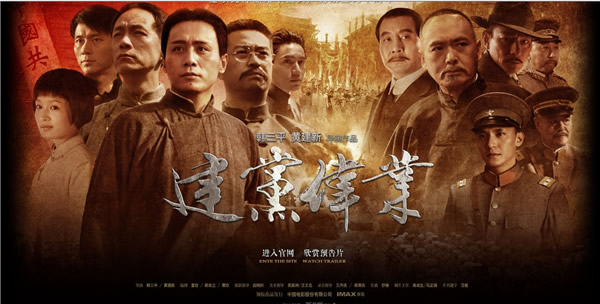

老杨急就章系列（25）
为什么我们不能访问YouTube？
by 长沙杨飞
YouTube是全球最大视频网，也是谷歌旗下网站之一（2008年10月谷歌以16.5亿美元收购了YouTube）。YouTube在中国首次被封大约是在2007年中，此后时断时续。2009年开始完全不可访问，至今没有解封。
YouTube最开始被封的原因很简单，它收录了一些中国大陆政府坚持应该删除的视频资源。比如美国纪录片《6/4/天/安/门》、娄烨电影《颐和园》以及柴静所拍的《穹/顶/之/下》等等。别说大中型制作，在中国就连个人发布的视频都管得很严。2015年有一个德国小伙子雷克用手机拍了一些个人点评视频都被删，因为有部分涉及时政。雷克的新浪微博也已被销号。我本人拍摄的纪录片《老杨的川藏线》，因为对宗教说了几句闲话，也被优酷禁止发布，最后我只得重新剪辑，弄了两个版本。
双版本也是很多影视公司对付政府审查的手段之一。所以，有些片子即使能在中国看到也别高兴太早，因为中国版和原版差异甚大。2009年的某一天，我看到书云导演的纪录片A
Year in
Tibet（西藏一年）即将在央视播出，当时我很惊讶，因为一年前这部片子在BBC首播的时候，它在国内被封得严严实实，我翻山越岭好不容易才找到国外的资源。看了看央视的《西藏一年》，果然是特制普通话版，很多我印象深刻的经典镜头都不见了。
中国政府对视频资源的管理比其他媒介都严，甚至连影视评论也一起管了，有段时间连著名的电影数据库IMDB（InternetMovie
Database）都无法访问。IMDB是英文的，读者多是老外，它在中国基本没有几个人看，封这个我一直没想通，直到发现电影《建党伟业》在IMDB上的一些评论我才明白，其中有一条评论是这么写的：
“Ironically, from the movie we know that before theCCP, Chinese students could
protest in Tiananmen/Square without beingmassacred, and before CCP the Chinese
people had the rights to form a partywithout being banned and persecuted.
When watching this so-called the “Beginning of theGreat Revival”, I believe most
of the Chinese audience would like see “The End”of it.”
简单翻译如下，“可笑的是，从这部电影里我们得知在中国共产党之前，中国学生可以在/天/安/门抗议而不会遭到屠杀；在中国共产党之前，中国人有权成立政党而不会遭到禁止和迫害。当观看这部所谓的“建党伟业”时，我相信大多数中国观众都想看到这个党早日
终结。”
这条评论（以及很多类似评论）现在IMDB上已经找不到了。不过，IMDB好歹还留下了二十几条评论，而在中国的电影评论网豆瓣上，《建党伟业》现在是唯一不可评论的电影，原有的七万多条评论都被删光了。

本篇谈的是谷歌视频产品，聊这么多电影貌似有点跑题，但我想通过这些案例让大家明白中国政府对视频（以及相关产品）的态度。这个态度很明确：不得出现与官方观点不一致的内容，也不得对党和政府提出任何实质性质疑，否则删帖封网。
有了这个态度，YouTube在中国被封得严严实实就是自然的了，它上面有很多中国政府不乐意见到的视频。话说回来，这些异见视频虽然不少，但总体来说也不算多。到2015年年底为止，YouTube上总计有超过五千万条视频，我个人估计中国政府不满意的视频应该不超过五千条，顶了天也不会超过五万条吧，不到YouTube视频总数的百分之零点一。为了这0.1%，就得屏蔽剩下的99.9%？
很遗憾这确实是中国互联网管理的现状。中国政府对异见内容的态度是：宁可错杀三千，不可使一人漏网。
YouTube就是这么死在中国的。只因为极少数观点与政府不一致的视频，所有的影视、音乐、科技、娱乐、传记和动物世界等等视频资源全都看不到。作为多年的摄影发烧友，国外的器材视频评测我现在全都看不了；作为超级音乐发烧友，全球最全的钢琴和交响乐视频现在也都和我无缘。应该说，封锁YouTube给我的个人工作和生活造成了很大的困扰，气得我有时只想飙脏话。
最近这两年时有传闻YouTube可能重返中国，我觉得最好不要做这个幻想。YouTube和中国政府的矛盾现在是越来越大，而不是越来越小。从2010年开始，互联网正在改变电视节目的传播方式，传统的电视台和有线电视播出方式日渐势衰。有一部分电视台已经走在前面，它们在YouTube等网站上建立专栏，开始网络直播。
看看最近广电总局是怎么管理中国境内的电视节目的吧，从新闻到娱乐节目，基本是全面管死了，连《爸爸去哪儿》都上了西天。现在中国最流行的视频就是统一播出的新闻联播，以及各种手撕鬼子神剧。不难理解，中国政府绝不会允许外国电视台在中国直播，而YouTube现在是全球各大电视台的重要直播平台。你觉得它有可能重返中国吗？
应该要指出，对YouTube不满的并不止中国政府。由于YouTube的内容问题，该网站至少在全球十几个国家曾遭受审查，包括巴西、印尼、伊朗、巴基斯坦、土耳其、沙特阿拉伯、泰国和阿联酋等，但绝大部分国家已经解封。在泰国，据说是有人违法上传了抨击国王的视频。在一些伊斯兰国家，对真主不敬的视频也是违法的。
根据谷歌透明度报告，到2016年3月，地球上还有三个国家屏蔽YouTube，它们是：伊朗、塔吉克斯坦和中国大陆。
从2009年开始，谷歌每年都发布两次《透明度报告》，公布各国政府和法院要求屏蔽和删除部分内容的情况。在2013年下半年，世界各国政府共要求谷歌从 YouTube
中移除 2199 项内容。谷歌移除了其中的 973 项 – 其中735 项是因为违反了（当地的）法律，另外238项是因为违反了YouTube 的社区准则。
由此可见，在世界绝大多数国家，对于政府和法院的指令，谷歌没有完全执行，但谷歌并没有因此被封锁。这些国家既包括美国、英国、德国和法国等发达国家，也包括很多落后的非洲国家，甚至比较极端的穆斯林国家。
为什么这些国家都能对谷歌求同存异，而中国做不到？我不知道该怎么回答这个问题。这么想象一下，如果一个国家的大多数居民都在使用谷歌YouTube看视频，大多数居民都在使用谷歌上网搜索，大多数居民都在使用谷歌地图给汽车导航，如果政府强行屏蔽谷歌，那这界政府（某党）可能是不想再干下一届了。
但是在中国，目前貌似不存在这样的问题？
杨飞，
2016年4月12日，长沙
本文节选自杨飞作品《为什么我们不能访问谷歌》
关注老杨作品：
1，杨飞摄影 www.midphoto.com
2，微信：yangfei789288
3，微信公众号：长沙杨飞
4，新浪微博@长沙杨飞
5，推特Twitter@feiyang17
6，Facebook：yangfei999999@hotmail.com